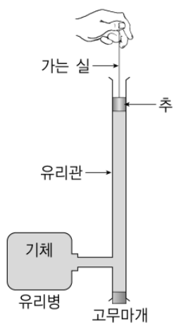

용수철 진자 평가 문항 고치기와 기체 기둥 위에서 진동하는 추 — 단열 진동·감쇠·LC/RLC 회로 유추Revising a spring-pendulum test item · a piston oscillating on an adiabatic gas column (Rüchardt) · damping · LC/RLC analogues
자연에서 관찰되는 진동 현상들은 용수철 진자의 운동 모형으로 단순화시켜 이해할 수 있다. 먼저 용수철 진자에 대한 평가 문항을 고찰해 보고, 관련된 다른 현상에 적용해 보자. 【30점】
2-1. 용수철 진자 평가 문항 초안의 개선 [10점]
예비교사 A는 ‘물리 학습 평가’ 수업 시간에 ‘용수철 진자의 주기 측정 실험에서 학생의 탐구 능력 평가’를 위하여 아래와 같이 두 가지 평가 목표를 설정하고 문항 초안을 만들었다.
○ 용수철 진자의 주기 측정 실험 과정을 이해한다.
○ 용수철 진자의 주기 측정 실험으로부터 얻어진 주기 관계식을 이해한다.
1. 다음은 수직으로 매단 용수철을 이용한 단진동 실험의 과정과 결론이다.
[실험 과정]
(가) 용수철 상수 \(k\)인 용수철에 질량 \(m\)인 추를 매달아 연직 아래로 10 cm만큼 잡아당겼다가 가만히 놓아 단진동하게 한다.
(나) 10회, 20회, 30회 왕복했을 때의 시간을 측정하여 이로부터 주기를 구한다.
(다) 추의 질량을 바꾸어 가면서 위의 과정을 반복 실험하여 용수철 진자의 주기를 구한다.
(라) 진폭을 바꾸어 가면서 위의 과정을 반복 실험하여 용수철 진자의 주기를 구한다.
[도출된 결론] 용수철 진자의 주기의 제곱은 질량에 비례하고, 진폭과는 무관하다.
이 실험에 대한 설명으로 옳은 것을 <보기>에서 모두 고른 것은? (단, 중력가속도는 9.8 m/s²이다.)
- ㄱ. 질량이 4배가 되면 주기는 2배가 된다.
- ㄴ. 이 실험에서 주기는 독립 변인이고, 질량은 종속 변인이다.
- ㄷ. 용수철 진자가 최하점에 있을 때 용수철에 저장된 위치에너지는 최대가 된다.
- ㄹ. 질량이 1 kg인 추를 매달고 실험했을 때 예상되는 주기는 2π초이다.
① ㄱ, ㄴ ② ㄱ, ㄹ ③ ㄴ, ㄷ ④ ㄱ, ㄷ, ㄹ ⑤ ㄴ, ㄷ, ㄹ
예비교사 A가 만든 위 문항 초안에서 개선할 부분 4가지를 찾아 수정하고, 그 이유를 쓰시오. 또, 수정한 내용을 근거로 선택형 문항을 개발할 때 고려해야 할 사항을 제안하시오. [10점]
문항 초안에서 개선할 부분 4가지를 찾아 수정하고, 그 이유를 쓰시오.
수정한 내용을 근거로 선택형 문항을 개발할 때 고려해야 할 사항을 제안하시오.
2-2. 기체의 압축에 의한 물체의 진동 [20점]

기체의 압축에 의한 물체의 진동은 공기식 충격 흡수 장치(air shock absorber)에 이용되고 있다. 그 원리를 이해하고 진동 현상을 관찰하기 위하여 기체로 채워진 관 속에서 진동하는 물체의 운동을 세 단계로 나누어 생각해 본다.
그림은 유리병과 연결된 반지름 \(r\)인 유리관 속에 공기보다 무거운 기체를 가득 채우고, 가는 실이 연결된 질량 \(m\)인 작은 원통형 추를 유리관 속에 넣고 실을 잡고 있는 것이다. 유리병과 유리관 속의 기체의 압력이 대기압과 같은 \(P_0\)이고 부피가 \(V_0\)인 상태에서 실을 놓을 때 추의 운동방정식은 \(m\dfrac{d^2y}{dt^2}=F_{\rm ext}+(P_0-P)\pi r^2\)이다. 여기서 \(P\)는 추가 진동하는 동안 관 속 기체의 압력이고, \(F_{\rm ext}\)는 대기압과 관 속 기체의 압력 차에 의한 힘을 제외한 모든 외력의 합이다. 추가 진동하는 동안 기체는 준정적 단열과정(\(PV^\gamma=\)일정, 여기서 \(\gamma\)는 정압비열과 정적비열의 비이다.)을 유지한다.
1) 상황을 단순화시켜 용수철 진자의 운동과 비교한다. 기체의 압력 \(P\)를 처음 부피 \(V_0\)와 기체가 압축된 길이 \(y\)의 함수로 바꾸고, 위 운동방정식에서 \(F_{\rm ext}\)는 중력뿐이라고 할 때, 운동방정식을 단순화시켜서 정리하면 수직으로 세워진 용수철 위에 연결되어 있는 물체의 운동방정식 \(m\dfrac{d^2y}{dt^2}=mg-Ky\)와 같은 형태의 방정식이 얻어진다.
2) 실제 운동을 관찰한다. 이 실험을 실행하였더니 진동하는 동안 유리관 속의 기체는 빠지지 않았으며, 감쇠진동이 관찰되었다. 그러므로 추에는 중력 외에 속도에 의존하는 감쇠력이 작용했다.
3) 다른 상황에서 일어나는 유사한 현상을 찾아 진동 현상을 관찰한다. 추의 운동과 유사한 단진동과 감쇠진동을 관찰할 수 있는 전기회로를 각각 만들어 특정 회로요소 양단에 오실로스코프를 연결하여 전위차를 관찰함으로써 시간에 따른 추의 변위를 유추해 본다.
추의 운동을 단진동으로 단순화시킬 조건, 단진동의 각진동수의 값과 풀이 과정, 실제 운동에서 추에 작용하는 감쇠력이 \(-bv\)라고 할 때 감쇠상수 \(b\)의 범위와 풀이 과정을 쓰시오. 또 단진동과 감쇠진동을 관찰할 수 있는 각 전기회로의 개략도와 오실로스코프로 관찰되는 전위차의 그래프를 그리시오. (단, 필요한 경우 \((1+x)^{-a}\simeq1-ax\ (x\ll1)\)의 근사식을 사용하시오.) [20점]
추의 운동을 단진동으로 단순화시킬 조건과 단진동의 각진동수의 값을 풀이 과정과 함께 쓰시오.
실제 운동에서 추에 작용하는 감쇠력이 \(-bv\)라고 할 때 감쇠상수 \(b\)의 범위와 풀이 과정을 쓰시오.
단진동과 감쇠진동을 관찰할 수 있는 각 전기회로의 개략도와 오실로스코프로 관찰되는 전위차의 그래프를 그리시오.
이 장치로 기체의 비열비 \(\gamma\)를 측정하려면 주기 \(T\)로부터 \(\gamma\)를 어떻게 구하는가? (뤼카르트 방법)
진동이 매우 느려서 기체가 등온 과정을 따른다면 각진동수는 어떻게 되는가?
정답모범 답안 요약
| 문항 | 모범 답안 (요약) | 검증 |
|---|---|---|
| 2-1 (1) | ① [도출된 결론] 삭제 → 측정 자료 표 제시(답의 단서·탐구 평가 불가) ② 보기 ㄷ(에너지, 평가 목표와 무관·용어 모호) → 통제 변인 보기로 교체 ③ 보기 ㄹ(k 없음, 판단 불가)·불필요한 g 조건 → k 제시, g 삭제 ④ 정답 조합(ㄱ, ㄷ)이 선지에 없음 → 정답 하나가 되도록 선지 수정 (수정 후 정답 ④ ㄱ, ㄷ, ㄹ). 부가: 평가 목표를 행동 동사로 명세화 | 공식 정답 미공개 — 선택형 문항 제작 원리(타당도, 정답의 명확성, 단서 배제)에 근거. 4가지 선택은 여러 조합이 가능 |
| 2-1 (2) | 평가 목표와 일치(타당도), 필요한 조건만 명확히 제시, 답의 단서 배제, 정답의 유일성과 매력적인 오답지(오개념 기반), 보기 조합의 균형 | 평가 문항 제작 원리 |
| 2-2 (1) | 조건: 작은 변위 \(\pi r^2y\ll V_0\), 외력은 중력뿐(마찰·감쇠 무시), 기체가 새지 않는 준정적 단열 과정. \(P\approx P_0(1+\gamma\pi r^2y/V_0)\) → \(m\ddot y=mg-Ky\), \(K=\gamma P_0\pi^2r^4/V_0\), \(\omega=\pi r^2\sqrt{\gamma P_0/(mV_0)}\) | 모의실험: 근사 없이 \(P=P_0(V_0/V)^\gamma\)를 그대로 넣고 적분한 주기가 \(2\pi/\omega_d\)와 1% 안에서 일치(기본값에서 0.75% 차 — 평형 압력이 \(P_0+mg/\pi r^2\)로 조금 높아 K가 커지는 효과) |
| 2-2 (2) | \(0\lt b\lt2\sqrt{mK}=2\pi r^2\sqrt{\gamma P_0m/V_0}\) (과소 감쇠), \(\omega_d=\sqrt{K/m-b^2/4m^2}\) | 모의실험: b/b_임계 < 1이면 진동(측정 주기 = 2π/ω_d), ≥ 1이면 진동 없음 |
| 2-2 (3) | 단진동: 충전한 C와 L의 LC 회로, C 양단 전압 \(V_C=V_0\cos(t/\sqrt{LC})\) (일정 진폭 코사인). 감쇠: RLC 직렬 회로(\(R\lt2\sqrt{L/C}\)), \(V_C=V_0e^{-Rt/2L}\cos\omega_dt\) (지수적으로 줄어드는 진동). 대응: m↔L, b↔R, K↔1/C, y↔q | 이론(역학–전기 유추) + 모의실험의 오실로스코프 그래프 |
| 확장 1 확장 | \(\gamma=\dfrac{4mV_0}{P_0r^4T^2}\) | 모의실험 기체(γ) 선택으로 주기 변화 확인 |
| 확장 2 확장 | \(\omega/\sqrt\gamma\)로 작아진다 | 이론 |
1소문항별 풀이 (AI 모범 답안)
2-1 (1)2-1. 용수철 진자 평가 문항 초안의 개선 [10점] 8점
문항 초안에서 개선할 부분 4가지를 찾아 수정하고, 그 이유를 쓰시오.
1초안 보기 판정
\(T=2\pi\sqrt{m/k}\): ㄱ 질량 4배 → 주기 2배 참. ㄴ 주기가 종속, 질량이 독립 변인 → 거짓. ㄷ 최하점에서 용수철이 가장 많이 늘어나 탄성 퍼텐셜 에너지 최대 → 참(단, ‘위치에너지’가 중력/탄성 중 무엇인지 모호). ㄹ \(k\)가 주어지지 않아 판단 불가 (\(k=1\) N/m일 때만 2π초). 정답이 ‘ㄱ, ㄷ’인데 선지에 없다.
2개선할 부분 4가지
| 개선할 부분 | 수정 | 이유 |
|---|---|---|
| ① [도출된 결론] 제시 | 결론을 지우고, 질량–주기 측정 자료 표(예: 0.1 kg 0.63 s, 0.4 kg 1.26 s …)를 제시 | 결론이 ㄱ의 답을 그대로 알려 줌(답의 단서). 탐구 능력(자료 해석으로 관계식 도출)을 평가하지 못함 |
| ② 보기 ㄷ | ‘(다)에서 용수철과 진폭은 같게 유지해야 한다(통제 변인)’로 교체 | 에너지 내용은 평가 목표(실험 과정·주기 관계식)와 무관 → 내용 타당도 저하. ‘위치에너지’도 중력/탄성 퍼텐셜 에너지 구분이 모호 |
| ③ 보기 ㄹ과 단서 조건 | ‘용수철 상수가 4 N/m일 때 질량 1 kg인 추의 주기는 π초이다’로 수정, ‘중력가속도 9.8 m/s²’ 조건 삭제 | k가 없어 참·거짓을 판단할 수 없음. g는 용수철 진자의 주기와 무관한 불필요한 정보로 오히려 혼란(오답 유도) |
| ④ 선지(답지) 구성 | 수정 후 참인 보기는 ㄱ, ㄷ, ㄹ → 선지 ④ ㄱ, ㄷ, ㄹ이 유일한 정답이 되도록 확인(필요시 답지 조합 재배열) | 초안은 정답(ㄱ, ㄷ)이 선지에 없거나(ㄹ 판단 불가) 해석에 따라 달라져 정답이 하나로 정해지지 않음 |
(그 밖에) 평가 목표의 ‘이해한다’는 관찰할 수 없는 동사 → ‘실험에서 독립·종속·통제 변인을 구분할 수 있다’, ‘측정 자료로부터 주기와 질량의 관계를 찾을 수 있다’처럼 행동 동사로 명세화. 과정 (나)의 ‘10회, 20회, 30회’는 반복 측정 의도를 ‘30회 왕복 시간을 3번 재어 평균’처럼 분명히.
보기의 물리적 참·거짓만 따지고 ‘평가 목표와의 일치’, ‘정답의 유일성’, ‘답의 단서’ 같은 문항 제작 원리에 근거한 이유를 쓰지 않는 경우.
2-1 (2)2-1. 용수철 진자 평가 문항 초안의 개선 [10점] 2점
수정한 내용을 근거로 선택형 문항을 개발할 때 고려해야 할 사항을 제안하시오.
1제안
- 평가 목표와 문항 내용의 일치(내용 타당도) — 목표를 행동 동사로 명세화하고, 목표와 무관한 보기를 넣지 않는다.
- 판단에 필요한 조건은 모두, 불필요한 조건은 빼고 제시한다.
- 답의 단서를 문두·자료에 노출하지 않는다(결론 제시 금지 → 탐구 능력은 자료 해석으로 평가).
- 정답이 하나이고 명확하도록 보기 조합을 점검하고, 오답지는 학생의 실제 오개념(독립/종속 변인 혼동 등)에 근거해 매력적으로 만든다.
(1)과 무관한 일반론만 나열하면 ‘수정한 내용을 근거로’라는 조건을 놓친다.
2-2 (1)2-2. 기체의 압축에 의한 물체의 진동 [20점] 8점
추의 운동을 단진동으로 단순화시킬 조건과 단진동의 각진동수의 값을 풀이 과정과 함께 쓰시오.
1압력의 선형화
\(P=P_0\left(\dfrac{V_0}{V_0-\pi r^2y}\right)^\gamma=P_0\left(1-\dfrac{\pi r^2y}{V_0}\right)^{-\gamma}\approx P_0\left(1+\dfrac{\gamma\pi r^2}{V_0}y\right)\) (\(x=-\pi r^2y/V_0\), \(|x|\ll1\)).
2운동 방정식
\(F_{\rm ext}=mg\)(아래 방향을 +\(y\)): \(m\ddot y=mg+(P_0-P)\pi r^2=mg-\dfrac{\gamma P_0\pi^2r^4}{V_0}y\) → \(K=\dfrac{\gamma P_0\pi^2r^4}{V_0}\).
평형 \(y_0=mg/K\) 둘레로 \(m\ddot u=-Ku\) (\(u=y-y_0\)) → 단진동, \(\omega=\sqrt{\dfrac Km}=\pi r^2\sqrt{\dfrac{\gamma P_0}{mV_0}}\), \(T=\dfrac{2}{r^2}\sqrt{\dfrac{mV_0}{\gamma P_0}}\).
3단순화 조건
- 변위가 작다: \(\pi r^2y\ll V_0\) (근사식 적용, 진폭 \(mg/K\)도 이 조건을 만족해야).
- 외력은 중력뿐: 추와 관 벽의 마찰·기체의 점성 등 감쇠력 무시.
- 기체가 새지 않고 준정적 단열(빠른 진동으로 열 교환 없음, 압력이 관 전체에서 균일).
- 추의 크기·실의 영향 무시(실을 놓은 뒤 장력 0), 관 반지름 일정.
근사식에서 \(x=+\pi r^2y/V_0\)로 놓아 부호가 바뀌는 실수(그러면 복원력이 아니라 반발력), \(\gamma\)를 빠뜨려 등온 과정(\(K=P_0\pi^2r^4/V_0\))으로 계산하는 실수.
2-2 (2)2-2. 기체의 압축에 의한 물체의 진동 [20점] 5점
실제 운동에서 추에 작용하는 감쇠력이 \(-bv\)라고 할 때 감쇠상수 \(b\)의 범위와 풀이 과정을 쓰시오.
1운동 방정식
\(m\ddot u=-Ku-b\dot u\) → \(u\propto e^{\lambda t}\), \(\lambda=\dfrac{-b\pm\sqrt{b^2-4mK}}{2m}\).
2감쇠 진동 조건
진동하려면 \(b^2-4mK\lt0\): \(0\lt b\lt2\sqrt{mK}=2\pi r^2\sqrt{\dfrac{\gamma P_0m}{V_0}}\). 이때 \(u=Ae^{-bt/2m}\cos(\omega_dt+\phi)\), \(\omega_d=\sqrt{\dfrac Km-\dfrac{b^2}{4m^2}}\). (\(b\ge2\sqrt{mK}\)이면 임계·과대 감쇠로 진동하지 않음; \(b\gt0\)이어야 감쇠.)
임계 감쇠 조건을 \(b=\sqrt{mK}\)나 \(b\lt2mK\)처럼 차원이 맞지 않게 쓰는 실수.
2-2 (3)2-2. 기체의 압축에 의한 물체의 진동 [20점] 7점
단진동과 감쇠진동을 관찰할 수 있는 각 전기회로의 개략도와 오실로스코프로 관찰되는 전위차의 그래프를 그리시오.
1회로 개략도
2단진동: LC 회로
축전기 \(C\)를 충전한 뒤 스위치를 닫아 인덕터 \(L\)과 연결(저항이 매우 작은 도선): \(L\ddot q+\dfrac qC=0\) → \(q=Q_0\cos\omega t\), \(\omega=\dfrac1{\sqrt{LC}}\). 오실로스코프를 \(C\) 양단에 연결하면 진폭이 일정한 코사인 곡선 \(V_C=V_0\cos\omega t\)가 보인다(그림 (a), 모의실험 아래 그래프의 회색 점선). 중력에 해당하는 일정한 항까지 맞추려면 직류 전원 \(\mathcal E\)를 직렬로 넣으면 \(V_C\)가 \(\mathcal E\)를 중심으로 진동한다.
3감쇠 진동: RLC 직렬 회로
같은 회로에 저항 \(R\)을 직렬로: \(L\ddot q+R\dot q+\dfrac qC=0\). \(R\lt2\sqrt{L/C}\)이면 \(V_C=V_0e^{-Rt/2L}\cos(\omega_dt+\phi)\), \(\omega_d=\sqrt{\dfrac1{LC}-\dfrac{R^2}{4L^2}}\) — 진폭이 지수 함수로 줄어드는 감쇠 곡선(그림 (b), 모의실험 빨간 곡선). 오실로스코프 화면에서는 포락선 \(\pm V_0e^{-Rt/2L}\) 안에서 진동이 잦아든다.
RC 회로(충·방전)를 그려 ‘감쇠’라고 답하는 실수 — RC 회로는 진동하지 않는다. 진동에는 L과 C가 모두 필요.
확장 12-2. 기체의 압축에 의한 물체의 진동 [20점]
이 장치로 기체의 비열비 \(\gamma\)를 측정하려면 주기 \(T\)로부터 \(\gamma\)를 어떻게 구하는가? (뤼카르트 방법)
1유도
\(\left(\dfrac{2\pi}T\right)^2=\dfrac{\gamma P_0\pi^2r^4}{mV_0}\) → \(\gamma=\dfrac{4mV_0}{P_0r^4T^2}\). (엄밀히는 평형 압력 \(P_0+mg/\pi r^2\)을 \(P_0\) 대신 쓴다.)
확장 22-2. 기체의 압축에 의한 물체의 진동 [20점]
진동이 매우 느려서 기체가 등온 과정을 따른다면 각진동수는 어떻게 되는가?
1결과
\(K_{\rm 등온}=P_0\pi^2r^4/V_0\) → \(\omega_{\rm 등온}=\pi r^2\sqrt{P_0/(mV_0)}=\omega/\sqrt\gamma\). 뉴턴이 음속을 등온으로 계산해 실제보다 \(\sqrt\gamma\)배 작게 얻은 것과 같은 이야기.
2채점 기준 (예시)
공식 채점 기준은 공개되지 않는다. 배점과 답안 요소를 바탕으로 만든 예시 채점 기준이다.
| 문항 | 배점 | 채점 요소 (예시 답안의 핵심 표현) |
|---|---|---|
| 2-1 (1) | 2 | ① 결론 제시(답의 단서) 지적·수정·이유 |
| 2-1 (1) | 2 | ② 평가 목표와 무관한 보기 ㄷ 지적·수정·이유 |
| 2-1 (1) | 2 | ③ 판단 불가능한 ㄹ·불필요한 조건 지적·수정·이유 |
| 2-1 (1) | 2 | ④ 정답이 선지에 없음(정답 불명확) 지적·수정·이유 |
| 2-1 (2) | 2 | 수정 내용과 연결된 일반 원칙 2가지 이상(타당도, 조건·단서, 정답 유일성 등) |
| 2-2 (1) | 2 | 단순화 조건(작은 변위·감쇠력 무시·기체 누출 없음/단열) |
| 2-2 (1) | 2 | \(V=V_0-\pi r^2y\)와 근사로 \(P\) 선형화 |
| 2-2 (1) | 2 | \(K=\gamma P_0\pi^2r^4/V_0\) 도출 |
| 2-2 (1) | 2 | \(\omega=\pi r^2\sqrt{\gamma P_0/(mV_0)}\) |
| 2-2 (2) | 2 | 감쇠력을 포함한 운동 방정식과 특성 방정식 |
| 2-2 (2) | 1 | 진동 조건 \(b^2\lt4mK\) 판단 |
| 2-2 (2) | 2 | \(0\lt b\lt2\pi r^2\sqrt{\gamma P_0m/V_0}\) |
| 2-2 (3) | 2 | LC 회로 개략도(축전기·인덕터, 오실로스코프 위치) |
| 2-2 (3) | 1 | 단진동 그래프(일정 진폭) |
| 2-2 (3) | 2 | RLC 회로 개략도 |
| 2-2 (3) | 2 | 감쇠 진동 그래프(지수 포락선)와 조건 \(R\lt2\sqrt{L/C}\) |
| 합계 30점 | ||
3출제 의도·검토
출제 의도
- 2-1: 선택형 문항 제작 원리(평가 목표와의 일치, 정답의 명확성, 답의 단서 배제, 필요·불필요 정보)에 따라 문항을 진단·수정할 수 있는가.
- 2-2: 단열 과정의 압력을 선형화해 용수철 모형으로 환원하고, 감쇠 조건과 역학–전기 유추로 진동 현상을 일반화할 수 있는가.
검토 의견
43D 모의실험 — 기체 기둥 위에서 진동하는 추 (공기식 충격 흡수 장치의 원리) (Space 재생/정지 · R 처음으로 · F 전체화면)
5고등학생 지도 — 고교 교육과정과 잇기
고교 교육과정과의 연결
- 2015 물리학Ⅱ 단진동(용수철 진자), 열역학 과정 — 단열 압축
- 2015 물리학Ⅱ 전기 진동(LC 회로)은 2022 교육과정에서 축소 — 오실로스코프 관찰은 탐구 활동으로
고등학생용 변형 문항
- 주사기 끝을 막고 피스톤을 눌렀다 놓으면 피스톤이 진동한다. 공기 기둥이 길수록 주기는 길어지는가, 짧아지는가?
- LC 회로에서 C를 4배로 하면 진동 주기는 몇 배인가?
6수업 활용 안내
수업 흐름 (60분)
- 평가 문항 진단 (15분) — 2-1 초안을 모둠별로 진단 — 결함 목록 → 수정안 발표
- 단열 기체 용수철 (15분) — 2-2 (1) 선형화와 K 유도, 모의실험으로 주기 확인
- 감쇠 조건 (10분) — 특성 방정식, b/b_임계 바꾸며 관찰
- 회로 유추 (15분) — LC·RLC 회로를 실제로 꾸며 오실로스코프 관찰
- 정리 (5분) — 역학–전기 대응표 완성
자주 나오는 오개념
- ‘위치에너지’는 하나뿐 (중력·탄성 구분 안 함)
- 감쇠가 있으면 주기가 짧아진다 (실제로는 ω_d < ω₀ → 길어짐)
- RC 회로도 진동한다
- 기체 압축은 등온이다
평가 포인트
- 문항 결함의 근거를 평가 원리로 제시하는가
- 근사식의 부호를 바르게 다루는가
- 감쇠 조건을 차원이 맞게 쓰는가
- 역학–전기 대응을 그림과 식으로 설명하는가
실험 연결
주사기와 추로 뤼카르트 장치를 만들어 공기의 γ ≈ 1.4를 측정하고, 이론 주기와 비교해 오차 원인(마찰, 누설, 등온 성분)을 토의한다.